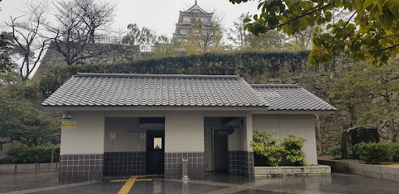
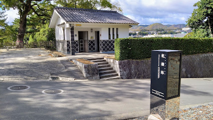
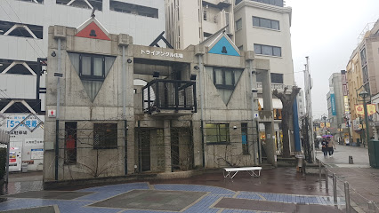
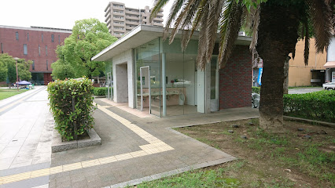
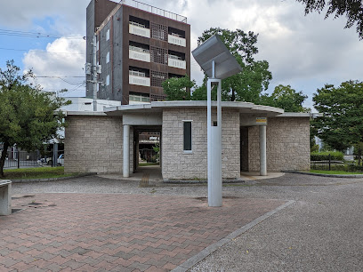
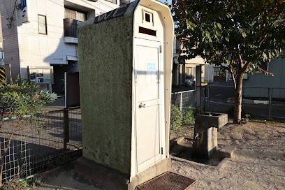
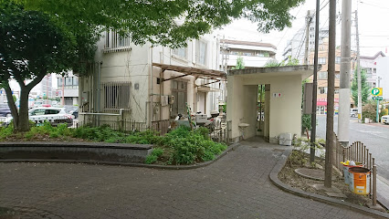
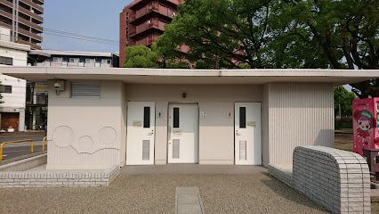
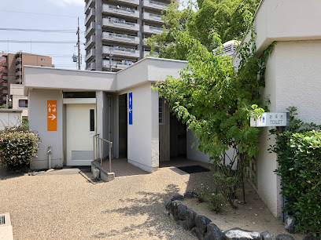
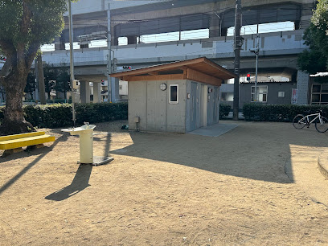

お城風のデザインにトイレ正面からお城がバックに見える
駅からも近いので利用もしやすいまさしく王のトイレ
住所：〒720-0061 広島県福山市丸之内１丁目７−１６

福山城から町を見渡せる絶景トイレ
場内にひっそりと佇む隠れた名店
住所：〒720-0061 広島県福山市丸之内１丁目７−１６

ルイージマンションを思わせるモダンなトイレ
夜に行けば不思議な出会いがあるかも？
住所：〒720-0063 広島県福山市元町１４−１

男性用はガラス張りというストロングスタイルの物件
我こそは猛者！という人にぴったりのトイレ
住所：〒720-0812 広島県福山市霞町１丁目１０−４

西とは対称に、重厚なつくりのトイレ
籠城戦にはうってつけです
住所：〒720-0812 広島県福山市霞町１丁目１０−４

究極のミニマルを体現したトイレ
もはやレンタルスペースのような体験ができる一品
住所：〒720-0806 広島県福山市南町１６−１５

福山東警察署 御船町交番の隣に佇む物件
女性にもおすすめの福山随一の安心スポット
住所：〒720-0042 広島県福山市御船町１丁目１４−１

シンプルながら美しい、王道スタイルの物件
ローズちゃんもあなたを見守ってくれます
住所：〒720-0803 広島県福山市花園町１丁目５

白く美しい近代スタイルの物件
用がなくても立ち寄りたくなります
住所：〒720-0803 広島県福山市花園町１丁目５

打ちっぱなしのコンクリートに、
和風の屋根をあしらった、和モダンな物件
線路の高架のコンクリートと周りの寺院との調和が素晴らしいです
住所：〒720-0034 広島県福山市若松町１−２

現代社会は忙しいですが、お手洗いの時間だけでも
落ち着いた空間で、ゆっくりお過ごしください。
Copyright 2016 67Green.